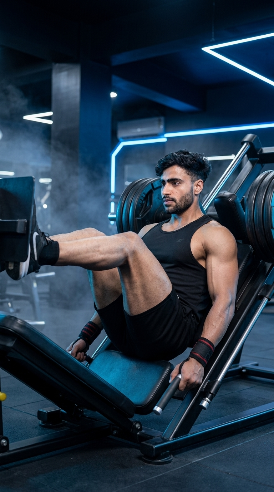

Primary Muscle
Quadriceps
Build Powerful Legs with Safe, Controlled Lower-Body Training
The Leg Press is a highly effective compound exercise that strengthens the quadriceps, glutes, hamstrings, and calves while providing excellent lower-body stability. Using a guided machine path, it allows you to safely overload the leg muscles with reduced stress on the lower back compared to free-weight exercises. Whether your goal is muscle growth, strength development, or improved athletic performance, the Leg Press is a valuable addition to any lower-body training program.

Quadriceps
Leg Press Machine
Beginner
Compound
Discover which muscles power the Leg Press and how the supporting muscle groups work together to build stronger legs, improve lower-body stability, enhance athletic performance, and increase overall strength.
Rectus Femoris, Vastus Lateralis, Vastus Medialis & Vastus Intermedius
Hip Extension & Lower-Body Power
Knee Stability & Hip Assistance
Ankle Stability & Force Transfer
Discover how the Leg Press builds lower-body strength, increases muscle mass, improves training safety, enhances athletic performance, and develops powerful legs with a stable and controlled movement pattern.
The Leg Press effectively strengthens the quadriceps, glutes, hamstrings, and calves, providing a solid foundation for overall lower-body power and strength.
The stable machine design allows you to safely apply progressive overload, making the Leg Press highly effective for building larger and stronger leg muscles.
Regular Leg Press training increases force production in the lower body, helping improve sprinting, jumping, and athletic performance.
Compared with many free-weight exercises, the Leg Press provides back support, allowing you to train your legs with reduced spinal loading when performed correctly.
Strengthening the muscles surrounding the hips, knees, and ankles enhances joint stability, balance, and overall lower-body function.
The Leg Press is beginner-friendly yet challenging enough for advanced lifters, making it an excellent exercise for building strength, muscle, and training confidence.
Follow these step-by-step instructions to perform the Leg Press with proper foot placement, controlled movement, and correct body positioning to maximize lower-body muscle development while minimizing injury risk.
Sit comfortably on the Leg Press machine with your back and head firmly against the pad. Place your feet shoulder-width apart in the center of the platform with your toes pointing slightly outward.
Keep your entire back in contact with the pad throughout the exercise.
Unlock the safety handles and slowly lower the platform by bending your knees until they reach approximately a 90-degree angle while keeping your heels flat on the platform.
Control the descent instead of letting the weight pull your legs down.
Push the platform away by driving through your heels while extending your knees and hips together. Keep your knees aligned with your toes throughout the movement.
Imagine pushing the platform away rather than lifting the weight.
Stop just before your knees fully lock at the top of the movement to maintain constant muscle tension and reduce stress on the knee joints.
Keep a slight bend in your knees at the top of every repetition.
Lower the platform again with control and repeat each repetition through a full, comfortable range of motion while maintaining proper foot placement and body alignment.
Focus on smooth, controlled repetitions instead of simply moving heavier weight.
Avoid these common technique mistakes to maximize leg development, improve performance, and perform the Leg Press safely and effectively.
Fully locking your knees at the top places unnecessary stress on the knee joints and reduces continuous muscle tension.
Stop just before your knees fully straighten to keep constant tension on the leg muscles.
Bringing your knees excessively toward your chest can cause your lower back to lift off the pad, increasing spinal stress.
Lower only until your knees reach a comfortable range while keeping your back firmly against the pad.
Feet that are too high, too low, or uneven on the platform can shift stress to the knees and reduce muscle activation.
Position your feet shoulder-width apart in the middle of the platform and keep them flat throughout the exercise.
Loading more weight than you can control often leads to shortened range of motion, poor technique, and increased injury risk.
Choose a weight that allows smooth, controlled repetitions with a full range of motion before increasing the load.
Apply these expert coaching cues to improve your Leg Press technique, maximize muscle activation, and perform every repetition with better control, stability, and confidence.
Place your feet about shoulder-width apart in the middle of the platform to evenly distribute the load across your quadriceps, glutes, and hamstrings.
Stable feet create stronger, safer lifts.
Maintain full contact between your lower back and the backrest throughout every repetition to reduce unnecessary stress on the spine.
Never let your hips or lower back lift off the pad.
Lower the platform slowly and press it upward with control instead of relying on momentum. This increases muscle activation and improves technique.
Slow reps build stronger legs than rushed reps.
Stop just short of full knee extension to maintain constant tension on the leg muscles and reduce unnecessary stress on the joints.
Keep tension on the muscles—not the joints.
Progress from learning proper Leg Press technique to safely lifting heavier loads while maintaining excellent control, full range of motion, and strong lower-body mechanics.
Begin with a light weight while learning correct foot position, controlled movement, and proper body alignment on the machine.
Foot placement, body position, movement control, and full range of motion.
Perform smooth, controlled repetitions while keeping your back against the pad and maintaining proper knee alignment throughout every set.
Controlled tempo, proper knee tracking, breathing, and consistent technique.
Add weight progressively while maintaining full range of motion and excellent control on every repetition.
Progressive overload, leg strength, muscle growth, and flawless technique.
Continue challenging yourself with heavier loads while preserving perfect form, consistent depth, and safe lifting habits for long-term progress.
Maximum strength, powerful legs, muscle growth, and long-term progression.
Find answers to common questions about Leg Press technique, muscles worked, proper foot placement, range of motion, training frequency, and how to build stronger legs safely and effectively.
The Leg Press primarily targets the quadriceps while also working the glutes, hamstrings, calves, and other stabilizing muscles throughout the movement.
Lower the platform until your knees reach about a 90-degree angle or as far as your mobility allows without lifting your lower back off the pad.
No. Stop just before fully locking your knees to maintain constant muscle tension and reduce stress on the knee joints.
Yes. The Leg Press is beginner-friendly because the machine provides stability while allowing you to learn proper lower-body movement with controlled resistance.
For muscle growth, perform 3–4 sets of 8–12 repetitions. For strength, use heavier loads for 4–6 repetitions while maintaining proper technique.
Most people benefit from performing the Leg Press one to two times per week as part of a balanced lower-body training program, depending on their recovery and fitness goals.
Explore other leg exercises that complement the Leg Press and help you build stronger quadriceps, glutes, hamstrings, and overall lower-body strength through both compound and isolation movements.
Continue building stronger legs with step-by-step exercise guides covering proper technique, muscles worked, common mistakes, expert coaching tips, and progression strategies for every fitness level.